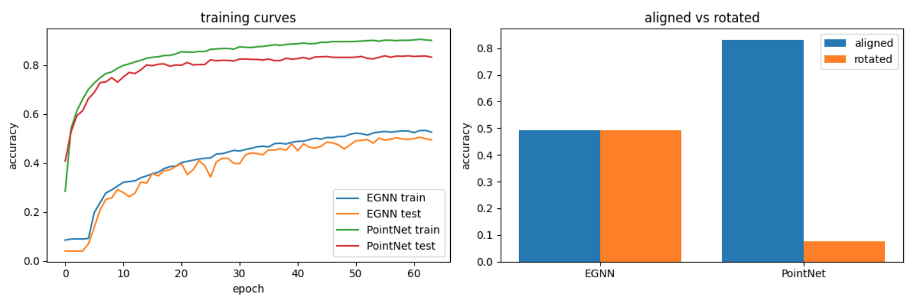
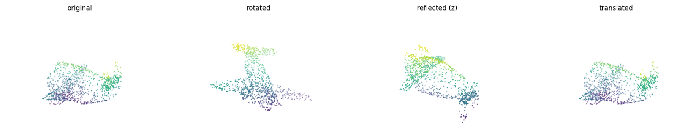
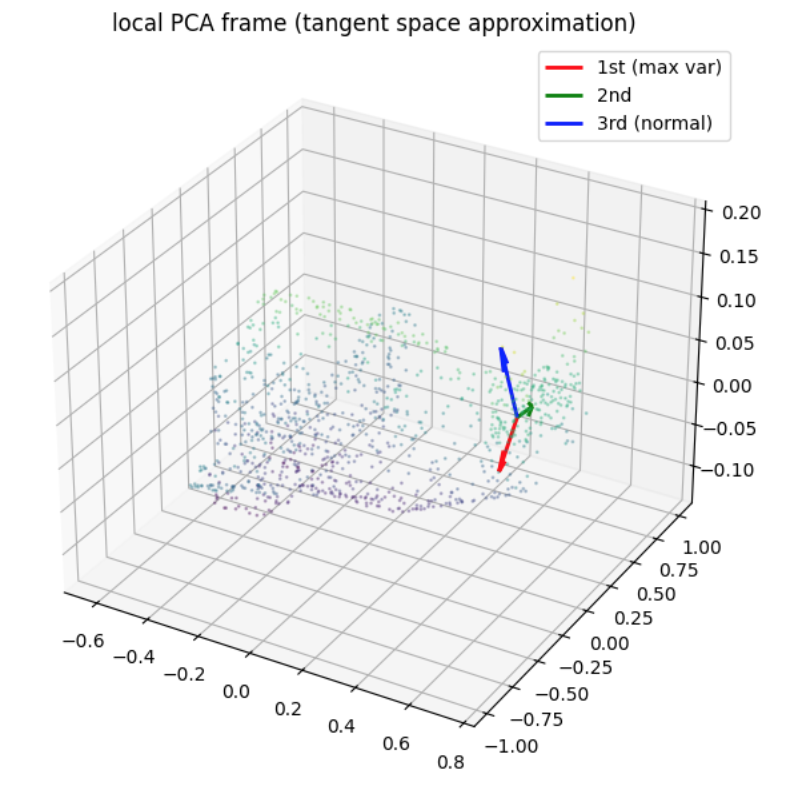

E(3) - Equivariant Network for 3D Point Cloud Classification
E(3)-Equivariant Graph Neural Network for 3D Point Cloud Classification


Overview
This project builds an E(3)-Equivariant Graph Neural Network (EGNN) from scratch for 3D object classification on ModelNet40 — 40 classes, 9,843 training point clouds, 1,024 points each — without using any equivariant layer libraries. The EGNN maintains two coupled message-passing streams: an invariant scalar feature stream and an equivariant coordinate stream, with E(3)-equivariance verified numerically at every architectural stage before training. The project’s central contribution is a controlled quantitative comparison against a non-equivariant PointNet baseline under random SO(3) rotations at test time, demonstrating that architectural symmetry constraints provide robustness guarantees that no amount of training on aligned data can replicate.
Core implementations covered:
- E(3) group primitives (
rotate,reflect,translate) with numerical verification - Formal equivariance and invariance checkers reused as ground-truth tests throughout
- k-NN graph construction with verified rotation-equivariant topology
- EGNN message passing from scratch: coupled scalar stream \(h_i\) and coordinate stream \(x_i\)
- Invariant classification head (global mean-pool over \(h_i\)) and equivariant vector head (mean-pool over \(x_i\))
- Local PCA tangent frame computation and visualization
- PointNet baseline from scratch: shared MLP + global max-pool
- Full training run with 2×2 accuracy table under aligned and rotated test conditions
Intuitive Explanation
1. What is a Point Cloud?
Imagine scanning a physical chair with a depth camera. The output is not a photograph — it is a cloud of thousands of (x, y, z) coordinate measurements scattered across the chair’s surface, with no edges, no faces, and no ordering. This is a point cloud: an unordered set of 3D positions, sometimes augmented with surface normals or color values at each point.
Formally, a point cloud is \(\mathcal{P} = \{(x_i, f_i) \mid x_i \in \mathbb{R}^3, f_i \in \mathbb{R}^D\}\), where \(x_i\) are spatial coordinates and \(f_i\) are per-point features. Because it is an unordered set, any algorithm processing it must be insensitive to the arbitrary indexing of points — and ideally, to arbitrary rotations and translations of the object in space. Point cloud classification is the task of assigning a semantic label (chair, airplane, table) to such a set, and it is the central task of this project.
2. What is E(3)-Equivariance?
Consider a coffee mug. Whether it sits upright, lies on its side, or is held upside down, it is still a mug. A human recognizes it instantly regardless of orientation. A naive neural network, trained only on upright mugs, will fail on the rotated ones — because it learned to recognize “mug-shaped coordinates,” not “mug-shaped geometry.”
E(3)-equivariance is the mathematical property that formalizes this orientation-independence. The group E(3) — the Euclidean group in three dimensions — contains all rotations, reflections, and translations of 3D space. A network is E(3)-equivariant if transforming its input by any element of E(3) produces a predictably transformed output, rather than an arbitrary one. For classification, where the output is a scalar label, this reduces to invariance: rotating the input object must not change the predicted class. This project builds that guarantee directly into the architecture — not by augmenting training data, but by making the violation of symmetry algebraically impossible.
3. Why Does Symmetry Matter in Neural Networks?
Standard neural networks learn symmetry statistically: show them enough rotated chairs during training, and they will eventually generalize. But statistical symmetry is fragile — it depends on coverage of the training distribution and fails at test-time orientations that were underrepresented. Architectural symmetry is different in kind, not just degree. When equivariance is encoded into the message-passing equations themselves, the network cannot produce a different output for a rotated input, regardless of what orientations it saw during training. This project makes the distinction concrete: PointNet learns symmetry statistically (and collapses under out-of-distribution rotations), while EGNN enforces it algebraically (and degrades by less than 0.1% under the same rotations).
Mathematical Foundations
1. The E(3) Group
The Euclidean group \(E(3)\) is the group of all distance-preserving transformations of \(\mathbb{R}^3\). It is formally the semidirect product:
\[E(3) = \mathbb{R}^3 \rtimes O(3)\]
where \(O(3)\) is the orthogonal group (rotations and reflections) and \(\mathbb{R}^3\) is the translation group. The semidirect product — not direct product — reflects the fact that translations and rotations do not commute. A general E(3) transformation applied to a point \(x \in \mathbb{R}^3\) takes the form:
\[x \mapsto Rx + t, \quad R \in O(3), \quad t \in \mathbb{R}^3\]
The subgroup \(SO(3) \subset O(3)\) restricts to orientation-preserving transformations (rotations only), defined by two conditions:
\[R^T R = I \quad \text{(orthogonality)} \qquad \det(R) = +1 \quad \text{(orientation-preserving)}\]
Reflections satisfy \(R^T R = I\) but \(\det(R) = -1\), placing them in \(O(3) \setminus SO(3)\).
2. Equivariance and Invariance
Let \(G\) be a group acting on input space \(X\) via \(\rho_X\) and on output space \(Y\) via \(\rho_Y\). A function \(f: X \to Y\) is \(G\)-equivariant if:
\[f(\rho_X(g) \cdot x) = \rho_Y(g) \cdot f(x) \quad \forall\, g \in G,\; x \in X\]
Transforming the input and then applying \(f\) yields the same result as applying \(f\) and then transforming the output. Invariance is the special case where \(\rho_Y(g) = \text{id}\) for all \(g\):
\[f(\rho_X(g) \cdot x) = f(x) \quad \forall\, g \in G,\; x \in X\]
In this project, the classification head is \(E(3)\)-invariant (rotating a chair must not change its predicted label), while the coordinate stream is \(E(3)\)-equivariant (rotating the input rotates the internal coordinate representations by the same \(R\)).
3. EGNN Message Passing
The EGNN maintains two coupled streams per layer: scalar node features \(h_i \in \mathbb{R}^{d}\) (invariant) and coordinate embeddings \(x_i \in \mathbb{R}^3\) (equivariant). Each layer applies three sequential updates:
Edge messages — computed from invariant quantities only:
\[m_{ij} = \phi_e\!\left(h_i,\, h_j,\, \|x_i - x_j\|^2\right)\]
Coordinate update — equivariant by construction:
\[x_i \leftarrow x_i + \sum_{j \in \mathcal{N}(i)} (x_i - x_j)\, \phi_x(m_{ij})\]
Scalar feature update — invariant aggregation:
\[h_i \leftarrow \phi_h\!\left(h_i,\, \sum_{j \in \mathcal{N}(i)} m_{ij}\right)\]
where \(\phi_e\), \(\phi_x\), \(\phi_h\) are learned MLPs, and \(\phi_x(m_{ij}) \in \mathbb{R}\) is a scalar gate. The equivariance of the coordinate update follows from two facts: (1) \(\|x_i - x_j\|^2\) is rotation-invariant, so \(m_{ij}\) and \(\phi_x(m_{ij})\) are unchanged under rotation; (2) \(R\) is linear, so it factors out of the sum:
\[Rx_i + \sum_j R(x_i - x_j)\,\phi_x(m_{ij}) = R\!\left(x_i + \sum_j (x_i - x_j)\,\phi_x(m_{ij})\right)\]
Tangent Bundle Interpretation
For a smooth manifold \(M\), the tangent bundle \(TM = \bigsqcup_{p \in M} T_pM\) assigns to every point \(p\) a tangent space \(T_pM\) — the flat linear space of all velocity vectors of smooth curves passing through \(p\). For a 2D surface embedded in \(\mathbb{R}^3\), \(T_pM\) is the tangent plane at \(p\), spanned by two basis vectors encoding local surface directions, with a third orthogonal axis corresponding to the surface normal.
A point cloud has no smooth structure, but local PCA recovers a discrete approximation. For each point \(x_i\), we collect its \(k\)-nearest neighbors, center them, and compute the \(3 \times 3\) covariance matrix. Its three eigenvectors — ordered by ascending eigenvalue — form a local orthonormal frame: the two high-variance axes approximate the tangent plane \(T_{x_i}M\), and the minimum-variance axis approximates the surface normal. This frame is verified to be rotation-equivariant: rotating the point cloud rotates each local frame by the same \(R\), consistent with \(TM\) transforming covariantly under isometries of the ambient space. In the context of EGNN, the equivariant coordinate stream \(x_i\) implicitly tracks these local frames across layers — each coordinate update aggregates displacement vectors \((x_i - x_j)\) from the neighborhood, which span precisely this local tangent structure.
Why Symmetry Matters: A Quantitative Comparison
Accuracy Table
| Model | Aligned (no rotation) | Rotated (random SO(3)) | Degradation (Δ) |
|---|---|---|---|
| EGNN | 0.4935 | 0.4931 | 0.0004 |
| PointNet | 0.8310 | 0.0778 | 0.7532 |
Both models trained for 64 epochs, h_dim=64, 4 layers, lr=1e-3, seed=42.
Training Curves

Training and test accuracy over 64 epochs for both models on aligned ModelNet40. PointNet converges faster and to a higher ceiling; EGNN converges more slowly, reflecting the cost of enforcing a hard symmetry constraint at h_dim=64.
Analysis
The table above is not primarily a performance comparison — it is a controlled experiment in what architectural symmetry buys versus what it costs. EGNN’s accuracy drops by 0.0004 under arbitrary SO(3) rotations. PointNet’s drops by 0.7532, from 83% to 8% — barely above the 2.5% random baseline for 40 classes. The cause is not a difference in training data, optimizer, or capacity: both models share identical hyperparameters. The cause is structural. EGNN’s message computation uses only \(\|x_i - x_j\|^2\) — a rotation-invariant quantity — so rotating the input leaves every \(m_{ij}\) unchanged. PointNet’s shared MLP receives raw \((x, y, z)\) coordinates directly; rotating the input replaces every coordinate with a different value, and the network has no mechanism to recognize the transformed geometry as the same object.
PointNet’s 83% aligned accuracy is best understood as coordinate memorization, not geometric understanding. Trained on ModelNet40’s consistently upright and forward-facing objects, the shared MLP learns axis-aligned decision boundaries: points with high \(z\) and centered \(x, y\) signal the top of a chair; points near \((0, 0, -0.5)\) signal a table leg. These rules are precise and effective — within the training distribution. Under a random SO(3) rotation, every axis-aligned rule is violated simultaneously. The global max-pool operation, which provides permutation invariance, offers no protection here: it selects the maximum activations across points, but those activations are computed from corrupted absolute coordinates. The result is a feature vector that no longer corresponds to any object the network was trained to recognize.
EGNN’s robustness is not statistical — it is algebraic. The proof is in the coordinate update equation: substituting \(Rx_k\) for every \(x_k\), the rotation matrix \(R\) factors out of the sum by linearity and cancels against the input, leaving the update identical to the unrotated case up to the same rotation \(R\) applied globally. This holds for any \(R \in O(3)\), for any input, after any number of layers, without requiring the network to have seen that rotation during training. The equivariance check passing at \(1.19 \times 10^{-7}\) error — float32 noise floor — confirms this is an exact architectural property, not an approximation.
The accuracy gap on aligned data (49% vs 83%) reflects a real cost: enforcing equivariance constrains the function class the network can represent. At h_dim=64 and 4 layers, EGNN cannot exploit coordinate shortcuts that PointNet uses freely. A deeper EGNN with larger hidden dimensions would close this gap while preserving the rotation robustness guarantee — but the gap would never reverse the fundamental tradeoff: PointNet’s aligned accuracy is purchased at the price of complete fragility to orientation change.
Results
Equivariance Verification
All checks performed on a single ModelNet40 point cloud (1,024 points), random SO(3) rotation, float32 precision.
| Test | Expected | Passed | Max Error |
|---|---|---|---|
| Distance matrix invariant under rotation | invariant | ✓ | 3.45e-04 |
| Identity function equivariant under rotation | equivariant | ✓ | 0.00e+00 |
norm-expand equivariant (deliberate failure) |
✗ | ✗ | 2.09e+00 |
| k-NN topology preserved under rotation | invariant | ✓ | — |
| Edge vectors equivariant under rotation | equivariant | ✓ | 1.27e-07 |
| EGNN coordinate stream equivariant | equivariant | ✓ | 1.19e-07 |
| EGNN classification head invariant | invariant | ✓ | 5.96e-08 |
| Invariant head invariant | invariant | ✓ | 5.96e-08 |
| Equivariant head equivariant | equivariant | ✓ | 4.42e-09 |
| PCA frame equivariant (subspace, |det|≈1) | equivariant | ✓ | 1e-06 |
| PointNet permutation invariant | invariant | ✓ | 0.00e+00 |
| PointNet rotation invariant (deliberate failure) | ✗ | ✗ | 1.38e-02 |
| EGNN rotation invariant | invariant | ✓ | 5.96e-08 |
Errors at ~1e-07 are float32 rounding accumulated over 1,024-point operations — not symmetry violations.
Figures

An airplane point cloud under the four E(3) primitives: original, rotated (random SO(3)), reflected (z-axis), translated. Pairwise distances are verified preserved across all transforms.

Local PCA frame at one point on an airplane point cloud. Red: first principal axis (max variance). Green: second principal axis. Blue: third axis (min variance) — the surface normal approximation. The two high-variance axes span the discrete tangent plane \(T_{x_i}M\).
Key Insights
1. What the Equivariant Coordinate Stream Encodes That Scalar MPNNs Cannot
A standard message-passing network operating only on scalar features \(h_i\) can capture distances, angles, and local density — but it cannot track how geometric structure transforms across layers. The EGNN coordinate stream \(x_i\) carries the full 3D positional embedding of each node through every layer, updated by aggregating displacement vectors \((x_i - x_j)\) weighted by learned scalar gates. This means each layer’s coordinate representation encodes not just local neighborhood statistics, but the oriented spatial arrangement of the entire receptive field — information that is strictly inaccessible to scalar-only MPNNs. A scalar MPNN cannot distinguish a left-handed helix from a right-handed one if their distance profiles match; the coordinate stream can, because it preserves directional structure that survives rotation equivariantly rather than collapsing it into invariant scalars prematurely.
2. Why PointNet’s Accuracy Is a Shortcut, Not a Capability
PointNet achieves 83% aligned accuracy with a remarkably simple architecture — shared MLP plus global max-pool. This performance is real, but its source is coordinate memorization: the network partitions absolute 3D space into regions associated with object classes, learned from a consistently oriented training set. The failure is not a bug in PointNet’s design; it is a direct consequence of feeding raw \((x, y, z)\) coordinates into a function that has no mechanism to recognize geometric equivalence under rotation. The 83% ceiling is a shortcut available only when the test distribution matches the training orientation. The moment that assumption breaks — a single random SO(3) rotation per test sample — the accuracy collapses to 8%, exposing that the network learned pose-specific texture in coordinate space, not pose-invariant geometric structure.
3. Architectural Symmetry vs. Learned Symmetry
There are two ways to make a network robust to rotations: train on enough rotated examples (learned symmetry) or build the rotation constraint into the architecture (architectural symmetry). These are not equivalent. Learned symmetry is probabilistic — it improves with more augmentation but can always fail on underrepresented orientations. Architectural symmetry is a hard guarantee: the equivariance proof in Stage 5 holds for any \(R \in O(3)\), for any input, after any number of layers, without any training examples at all. The verification checks in this project — all passing at float32 noise floor before a single training step — are the concrete expression of this guarantee. The cost is real: constraining the function class reduces the model’s ability to exploit coordinate shortcuts, which is why EGNN’s aligned accuracy (49%) sits below PointNet’s (83%) at equal capacity. But this cost is predictable and closeable by scaling; PointNet’s fragility under rotation is structural and cannot be closed without changing the architecture.
Implementation Notes
No equivariant layer libraries. EGNN message passing, coordinate updates, and output heads are implemented from scratch in pure PyTorch. PyG is used only for data loading and k-NN graph construction via
KNNGraph.Equivariance tested before training.
check_equivarianceandcheck_invarianceare implemented in Stage 3 and reused at every architectural stage. Every symmetry claim is backed by a passing numerical test visible as a cell output before any model is trained.k-NN graph precomputed via transform.
KNNGraph(k=20)is applied as a dataset transform at load time, avoiding repeated graph construction during training. The graph topology is verified rotation-equivariant: rotating the point cloud permutes edges but does not change the neighbor set.Constant node feature initialization. EGNN node features \(h_i\) are initialized as a constant scalar (ones) projected to h_dim via a linear layer. All geometric information enters through the coordinate stream \(x_i\), keeping the invariant/equivariant separation clean.
float32 tolerances. Equivariance checks use
atol=1e-4for single operations andatol=1e-3for large aggregations (e.g., 1024×1024 distance matrices). Errors at ~1e-7 to ~1e-4 are float32 rounding, not symmetry violations.Shared hyperparameters across models. Both EGNN and PointNet use h_dim=64, 4 layers, Adam optimizer, lr=1e-3, CosineAnnealingLR, 64 epochs, seed=42 — ensuring the accuracy comparison is architectural, not hyperparameter-driven.
Eigenvector sign ambiguity in PCA frames.
torch.linalg.eighreturns eigenvectors defined up to sign flip and column swap when eigenvalues are close. Equivariance of PCA frames is verified via \(|\det(A^T B)| \approx 1\) (subspace agreement) rather than elementwise comparison.
Dependencies
torch==2.3.1 # core deep learning framework
torch-geometric # data loading, KNNGraph transform, global pooling
torch-scatter # scatter_add for EGNN message aggregation
torch-sparse # sparse graph operations
numpy # numerical utilities
matplotlib # point cloud and training curve visualization
tqdm # training progress barsINSTALL COMMANDS [Kaggle Notebook \(\rightarrow\) Add-ons \(\rightarrow\) Install Dependencies]
pip install torch==2.3.1+cu121 torchvision==0.18.1+cu121 \
--index-url https://download.pytorch.org/whl/cu121
pip install torch-geometric==2.5.3
pip install pyg_lib==0.4.0 torch_scatter==2.1.2 \
torch_sparse==0.6.18 torch_cluster==1.6.3 \
-f https://data.pyg.org/whl/torch-2.3.0+cu121.htmlNote
| The notebook was developed and tested on a Kaggle environment with a NVIDIA P100 16GB GPU, Python 3.12, and CUDA 12.1. All cells run end-to-end from a clean kernel without any external dependencies beyond those listed above. |
|---|